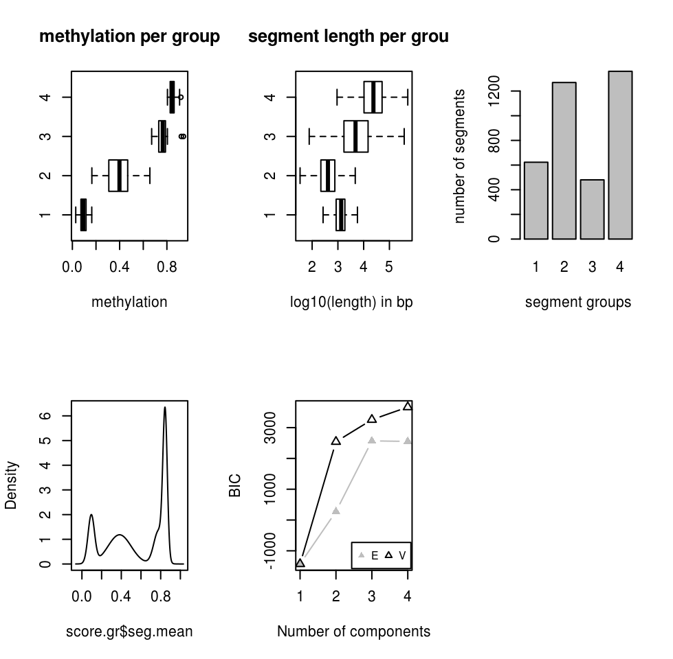
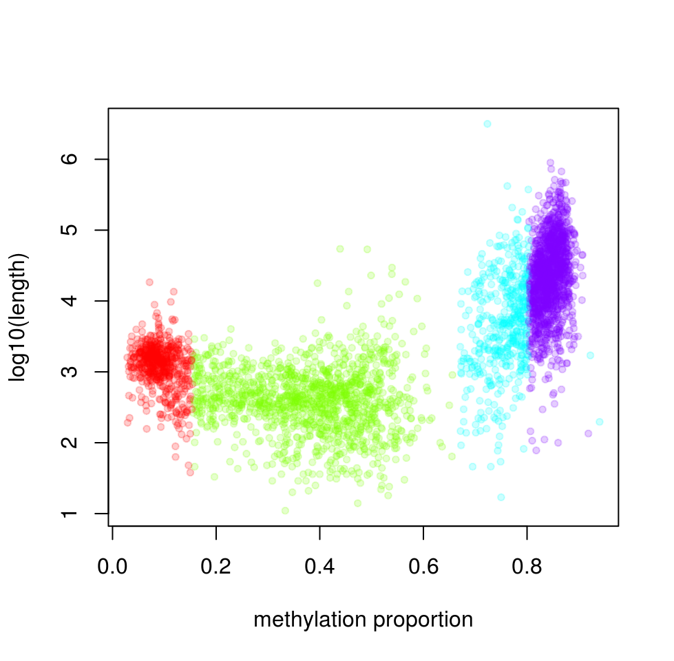

8.3 Extracting interesting regions: segmentation and differential methylation
When analyzing DNA methylation data, we usually look for regions that are different than the rest of the methylome or different from a reference methylome. These regions are so called “interesting regions”. They usually mark important genomic features that are related to gene regulation which in turn defines the cell type. Therefore, it is a general interest to find such regions and analyze them further to understand our biological sample or to answer specific research questions. Below we will describe two ways of defining “regions of interest”.
8.3.1 Differential methylation
Once methylation proportions per base are obtained, generally, the differences between methylation profiles are considered next. When there are multiple sample groups where each group defines a separate biological entity or treatment, it is usually of interest to locate bases or regions with different methylation proportions across the sample groups. The bases or regions with different methylation proportions across samples are called differentially methylated CpG sites (DMCs) and differentially methylated regions (DMRs). They have been shown to play a role in many different diseases due to their association with epigenetic control of gene regulation. In addition, DNA methylation profiles can be highly tissue-specific due to their role in gene regulation (Schübeler 2015). DNA methylation is highly informative when studying normal and diseased cells, because it can also act as a biomarker. For example, the presence of large-scale abnormally methylated genomic regions is a hallmark feature of many types of cancers (Ehrlich 2002). Because of aforementioned reasons, investigating differential methylation is usually one of the primary goals of doing bisulfite sequencing.
8.3.1.1 Fisher’s exact test
Differential DNA methylation is usually calculated by comparing the proportion of methylated Cs in a test sample relative to a control. In simple comparisons between such pairs of samples (i.e. test and control), methods such as Fisher’s Exact Test can be used. if there are replicates, replicates can be pooled within groups to a single sample per group. This strategy, however, does not take into account biological variability between replicates. We will now show how to compare pairs of samples via calculateDiffMeth function in methylKit. When there are only one sample per sample group, calculateDiffMeth automatically applies Fisher’s exact test. We will not extract one sample from each group and run calculateDiffMeth, which will automatically run Fisher’s exact test.
getSampleID(meth)
new.meth=reorganize(meth,sample.ids=c("test1","ctrl1"),treatment=c(1,0))
dmf=calculateDiffMeth(new.meth)As mentioned, we can also pool the samples from the same group by adding up the number of Cs and Ts per group. This way even if we have replicated experiments we treat them as single experiments, and can apply Fisher’s exact test. We will now pool the samples and apply
pooled.meth=pool(meth,sample.ids=c("test","control"))
dm.pooledf=calculateDiffMeth(pooled.meth)calculateDiffMeth function returns the P-values for all bases or regions in the input methylBase object. We need to filter to get differentially methylated CpGs. This can be done via getMethlyDiff function or simple filtering via [ ] notation. Below we show how to filter the methylDiff object output by calculateDiffMeth() function in order to get differentially methylated CpGs. The function arguments defines cutoff values for the methylation difference between groups and Q-value. In these cases, we require a methylation difference of 25% and Q-value of at least \(0.01\).
# get differentially methylated bases/regions with specific cutoffs
all.diff=getMethylDiff(dm.pooledf,difference=25,qvalue=0.01,type="all")
# get hyper-methylated
hyper=getMethylDiff(dm.pooledf,difference=25,qvalue=0.01,type="hyper")
# get hypo-methylated
hypo=getMethylDiff(dm.pooledf,difference=25,qvalue=0.01,type="hypo")
#using [ ] notation
hyper2=dm.pooledf[dm.pooledf$qvalue < 0.01 & dm.pooledf$meth.diff > 25,]8.3.1.2 Logistic regression based tests
Regression-based methods are generally used to model methylation levels in relation to the sample groups and variation between replicates. Differences between currently available regression methods stem from the choice of distribution to model the data and the variation associated with it. In the simplest case, linear regression can be used to model methylation per given CpG or loci across sample groups. The model fits regression coefficients to model the expected methylation proportion values for each CpG site across sample groups. Hence, the null hypothesis of the model coefficients being zero could be tested using t-statistics. However, linear regression based methods might produce fitted methylation levels outside the range [0,1] unless the values are transformed before regression. An alternative is logistic regression, which can deal with data strictly bounded between 0 and 1 and with non-constant variance, such as methylation proportion/fraction values. In the logistic regression, it is assumed that fitted values have variation \(np(1-p)\), where \(p\) is the fitted methylation proportion for a given sample and n is the read coverage. If the observed variance is larger or smaller than assumed by the model, one speaks of under- or over-dispersion. This over/under-dispersion can be corrected by calculating a scaling factor and using that factor to adjust the variance estimates as in \(np(1-p)s\), where \(s\) is the scaling factor. MethylKit can apply logistic regression to test the methylation difference with or without the over-dispersion correction. In this case, Chi-square or F-test can be used to compare the difference in the deviances of the null model and the alternative model. The null model assumes there is no relationship between sample groups and methylation, and the alternative model assumes that there is a relationship where sample groups are predictive of methylation values for a given CpG or region for which the model is constructed. Next, we are going to use the logistic regression based model with over-dispersion correction and Chi-square test.
dm.lr=calculateDiffMeth(meth,overdispersion = "MN",test ="Chisq")8.3.1.3 Betabinomial distribution based tests
More complex regression models use beta binomial distribution and are particularly useful for better modeling the variance. Similar to logistic regression, their observation follows binomial distribution (number of reads), but methylation proportion itself can vary across samples, according to a beta distribution. It can deal with fitting values in [0,1] range and performs better when there is greater variance than expected by the simple logistic model. In essence, these models have a different way of calculating a scaling factor when there is over-dispersion in the model. Further enhancements are made to these models by using the Empirical Bayes methods that can better estimate hyper parameters of the beta distribution (variance-related parameters) by borrowing information between loci or regions within the genome to aid with inference about each individual loci or region. We are now going to use a beta-binomial based model called DSS(Feng, Conneely, and Wu 2014) to calculate differential methylation.
dm.dss=calculateDiffMethDSS(meth)## Using internal DSS code...8.3.1.4 Differential methylation for regions rather than base-pairs
Until now, we worked on differentially methylated cytosines. However, working with base-pair resolution data has its problems. Not all the CpGs will be covered in all samples, if covered they may have low coverage which reduces the power of the tests. Instead of base-pairs, we can choose to work with regions. So, it might be desirable to summarize methylation information over pre-defined regions rather than doing base-pair resolution analysis. methylKit provides functionality to do such analysis. We can either tile the whole genome to tiles with predefined length, or we can use pre-defined regions such as promoters or CpG islands. This kind of regional analysis is carried out by adding up C and T counts from each covered cytosine and returning a total C and T count for each region.
The function below tiles the genome with windows 1000bp length and 1000bp step-size and summarizes the methylation information on those tiles. In this case, it returns a methylRawList object which can be fed into unite and calculateDiffMeth functions consecutively to get differentially methylated regions.
tiles=tileMethylCounts(myobj,win.size=1000,step.size=1000)
head(tiles[[1]],3)## chr start end strand coverage numCs numTs
## 1 chr21 9764001 9765000 * 24 3 21
## 2 chr21 9820001 9821000 * 13 0 13
## 3 chr21 9837001 9838000 * 11 0 11In addition, if we are interested in particular regions, we can also get those regions as methylKit objects after summarizing the methylation information as described above. The code below summarizes the methylation information over a given set of promoter regions and outputs a methylRaw or methylRawList object depending on the input. We are using the output of genomation functions used above to provide the locations of promoters. For regional summary functions, we need to provide regions of interest as GRanges object.
library(genomation)
# read the gene BED file
gene.obj=readTranscriptFeatures(system.file("extdata", "refseq.hg18.bed.txt",
package = "methylKit"))
promoters=regionCounts(myobj,gene.obj$promoters)
head(promoters[[1]])## chr start end strand coverage numCs numTs
## 1 chr21 10011791 10013791 - 7953 6662 1290
## 2 chr21 10119796 10121796 - 1725 1171 554
## 3 chr21 10119808 10121808 - 1725 1171 554
## 4 chr21 13903368 13905368 + 10 10 0
## 5 chr21 14273636 14275636 - 282 220 62
## 6 chr21 14509336 14511336 + 1058 55 1003In addition, it is possible to cluster DMCs based on their proximity and direction of differential methylation. This can be achieved by methSeg function in methylKit. We will see more about methSeg function in the following section. But it can take the output of getMethylDiff function therefore can work on DMCs to get differentially methylated regions.
8.3.1.5 Adding covariates
Covariates can be included in the analysis as well in methylKit. The calculateDiffMeth function will then try to separate the influence of the covariates from the treatment effect via the logistic regression model. In this case, we will test if full model (model with treatment and covariates) is better than the model with the covariates only. If there is no effect due to the treatment (sample groups), the full model will not explain the data better than the model with covariates only. In calculateDiffMeth, this is achieved by supplying the covariates argument in the format of a data.frame. Below, we simulate methylation data and add make a data.frame for the age. The data frame can include more columns, and those columns can also be factor variables. The row order of the data.frame should match the order of samples in the methylBase object. Below we are showing an example of this using a simulated data set where methylation values of CpGs will be affected by the age of the sample.
covariates=data.frame(age=c(30,80,34,30,80,40))
sim.methylBase=dataSim(replicates=6,sites=1000,
treatment=c(rep(1,3),rep(0,3)),
covariates=covariates,
sample.ids=c(paste0("test",1:3),paste0("ctrl",1:3)))
my.diffMeth3=calculateDiffMeth(sim.methylBase,
covariates=covariates,
overdispersion="MN",
test="Chisq",mc.cores=1)8.3.2 Methylation segmentation
The analysis of methylation dynamics is not exclusively restricted to differentially methylated regions across samples, apart from this there is also an interest in examining the methylation profiles within the same sample. Usually, depressions in methylation profiles pinpoint regulatory regions like gene promoters that co-localize with CG-dense CpG islands. On the other hand, many gene-body regions are extensively methylated and CpG-poor (Bock et al. 2012). These observations would describe a bimodal model of either hyper- or hypomethylated regions dependent on the local density of CpGs (Lövkvist et al. 2016). However, given the detection of CpG-poor regions with locally reduced levels of methylation (on average 30%) in pluripotent embryonic stem cells and in neuronal progenitors in both mouse and human, a different model seems also reasonable (M. B. Stadler et al. 2011). These low-methylated regions (LMRs) are located distal to promoters, have little overlap with CpG islands and associated with enhancer marks such as p300 binding sites and H3K27ac enrichment.
Now we are going to try to segment portion for the H1 human embryonic stem cell line. MethylKit uses change-point analysis to segment the methylome. In change-point analysis, the change-points of a genome-wide methylation signal are recorded and the genome is partitioned into regions between consecutive change points. CpGs in each segment is similar to eachoter more than the following segment. After segmentation, methylKit function methSeg identifies segments that are further clustered into segment classes using a mixture modeling approach. This clustering is based on only the average methylation level of the segments and allows the detection of distinct methylome features comparable to unmethylated regions (UMRs), lowly methylated regions (LMRs) and fully methylated regions (FMRs) mentioned at Stadler et. al (2012). The code snippet below reads the methylation data from H1 cell line as a GRanges object, and runs the segmentation with potentially up to classes of segments. Mixture modelling determines the optimal number of segments using a statistic called bayesian information criterion (BIC). BIC is a statistic based on model likelihood and helps us select the model that fits the data better. We have set the number of segment classes to try using G=1:4 argument.The minSeg arguments are related to minimum number of CpGs in the segments.
# read methylation data
methFile=system.file("extdata","H1.chr21.chr22.rds",
package="compGenomRData")
mbw=readRDS(methFile)
# segment the methylation data
res=methSeg(mbw,minSeg=10,G=1:4,
join.neighbours = TRUE)
In this case, we know that BIC does not improve much after 4 segment classes. Now, we will not have a look at the characteristics of the segment classes. We are going to plot mean methylation value and the length of the segment as a scatter plot.
# plot
plot(res$seg.mean,
log10(width(res)),pch=20,
col=scales::alpha(rainbow(4)[as.numeric(res$seg.group)], 0.2),
ylab="log10(length)",
xlab="methylation proportion")
The highly methylated segment classes that have more than 70% methylation are usually longer, median length is 17889 bp. The segment class that has the lowest methylation values have median length of 1376 bp and the shortest segment class has low to medium methylation level, has median length of 412 bp.
8.3.3 Working with large files
We might want to perform differential methylation analysis in R using whole genome methylation data of multiple samples. The problem is that for genome-wide experiments, file sizes can easily range from hundreds of megabytes to gigabytes and processing multiple instances of those files in memory (RAM) might become unfeasible unless we have access to a high performance cluster (HPC) with extensive RAM. If we want to use a desktop computer or laptop with limited RAM, we either need to restrict our analysis to a subset of the data or use packages that can handle this situation.
The methylKit package provides the capability of dealing large files and high number of samples by exploiting flat file databases to substitute in-memory objects. The internal data apart from meta information has a tabular structure storing chromosome, start/end position, strand information of the associated CpG base just like many other biological formats like BED, GFF or SAM. By exporting this tabular data into a TAB-delimited file and making sure it is accordingly position-sorted it can be indexed using the generic tabix tool. In general tabix indexing is a generalization of BAM indexing for generic TAB-delimited files. It inherits all the advantages of BAM indexing, including data compression and efficient random access in terms of few seek function calls per query (H. Li 2011). MethylKit relies on [Rsamtools] (http://bioconductor.org/packages/release/bioc/html/Rsamtools.html) which implements tabix functionality for R and this way internal methylKit objects can be efficiently stored as compressed file on the disk and still be fast accessed. Another advantage is that existing compressed files can be loaded in interactive sessions, allowing the backup and transfer of intermediate analysis results.
methylKit provides the capability for storing objects in tabix format within various functions. Every methylKit object has their tabix-based flat-file database equivalent. For example, when reading a methylation call file the dbtype argument can be provided, this will create tabix based objects.
myobj=methRead( file.list,
sample.id=list("test1","test2","ctrl1","ctrl2"),
assembly="hg18",treatment=c(1,1,0,0),
dbtype="tabix") The advantage of tabix-based objects is of course saving memory and more efficient parallelization for differential methylation calculation. However, since the data is written to a file and indexed whenever a new object is created, working with tabix-based objects will be slower at certain steps of the analysis compared to in-memory objects.
References
Schübeler, Dirk. 2015. “Function and Information Content of DNA Methylation.” Nature 517 (7534): 321–26.
Ehrlich, Melanie. 2002. “DNA Methylation in Cancer: Too Much, but Also Too Little.” Oncogene 21 (35): 5400–5413.
Feng, Hao, Karen N Conneely, and Hao Wu. 2014. “A Bayesian Hierarchical Model to Detect Differentially Methylated Loci from Single Nucleotide Resolution Sequencing Data.” Nucleic Acids Res. 42 (8): e69.
Bock, Christoph, Isabel Beerman, Wen-Hui Lien, Zachary D Smith, Hongcang Gu, Patrick Boyle, Andreas Gnirke, Elaine Fuchs, Derrick J Rossi, and Alexander Meissner. 2012. “DNA Methylation Dynamics During in Vivo Differentiation of Blood and Skin Stem Cells.” Mol. Cell 47 (4): 633–47.
Lövkvist, Cecilia, Ian B Dodd, Kim Sneppen, and Jan O Haerter. 2016. “DNA Methylation in Human Epigenomes Depends on Local Topology of CpG Sites.” Nucleic Acids Res. 44 (11): 5123–32.
Stadler, Michael B, Rabih Murr, Lukas Burger, Robert Ivanek, Florian Lienert, Anne Schöler, Erik van Nimwegen, et al. 2011. “DNA-binding Factors Shape the Mouse Methylome at Distal Regulatory Regions.” Nature 480 (7378): 490–95.
Li, Heng. 2011. “Tabix: Fast Retrieval of Sequence Features from Generic TAB-delimited Files.” Bioinformatics 27 (5): 718–19.